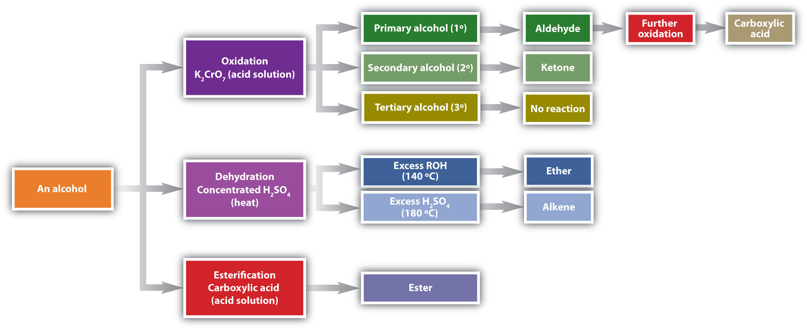

One of the more familiar chemical compounds on Earth is ethyl alcohol (ethanol). As the intoxicant in alcoholic beverages, ethanol is often simply called alcohol. If ethanol is diluted, as it is in wine, beer, or mixed drinks with about 1 oz of liquor, and if it is consumed in small quantities, it is relatively safe. In excess—four or more drinks in a few hours—it causes intoxication, which is characterized by a loss of coordination, nausea and vomiting, and memory blackouts.
Excessive ingestion of ethanol over a long period of time leads to cirrhosis of the liver, alteration of brain cell function, nerve damage, and strong physiological addiction. Alcoholism—an addiction to ethanol—is the most serious drug problem in the United States. Heavy drinking shortens a person’s life span by contributing to diseases of the liver, the cardiovascular system, and virtually every other organ of the body.
In small quantities—one or two drinks a day—ethanol might promote health. In addition to the possible benefits of modest amounts of ethanol, a chemical in red wines, resveratrol, is thought to lower the risk of heart disease. Resveratrol, found in red grapes, is an antioxidant. It inhibits the oxidation of cholesterol and subsequent clogging of the arteries. One need not drink wine to get the benefits of resveratrol, however. It can be obtained by eating the grapes or drinking red grape juice.
Ethanol and resveratrol, a phenol, are representatives of two of the families of oxygen-containing compounds that we consider in this chapter. Two other classes, aldehydes and ketones, are formed by the oxidation of alcohols. Ethers, another class, are made by the dehydration of alcohols.
In Chapter 12 "Organic Chemistry: Alkanes and Halogenated Hydrocarbons" and Chapter 13 "Unsaturated and Aromatic Hydrocarbons", we considered several kinds of hydrocarbons. Now we examine some of the many organic compounds that contain functional groups. We first introduced the idea of the functional groupA structural arrangement of atoms and/or bonds that imparts a wide range of important properties to organic compounds., a specific structural arrangement of atoms or bonds that imparts a characteristic chemical reactivity to the molecule, in Chapter 4 "Covalent Bonding and Simple Molecular Compounds", Section 4.6 "Introduction to Organic Chemistry". If you understand the behavior of a particular functional group, you will know a great deal about the general properties of that class of compounds. In this chapter and Chapter 15 "Organic Acids and Bases and Some of Their Derivatives", we make a brief yet systematic study of some of organic compound families. Each family is based on a common, simple functional group that contains an oxygen atom or a nitrogen atom. Some common functional groups are listed in Table 14.1 "Selected Organic Functional Groups".
Table 14.1 Selected Organic Functional Groups
| Name of Family | General Formula | Functional Group | Suffix* |
|---|---|---|---|
| alkane | RH | none | -ane |
| alkene | R2C=CR2 |

|
-ene |
| alkyne | RC≡CR | –C≡C– | -yne |
| alcohol | ROH | –OH | -ol |
| thiol | RSH | –SH | -thiol |
| ether | ROR | –O– | ether |
| aldehyde |

|

|
-al |
| ketone |

|

|
-one |
| carboxylic acid |

|

|
-oic acid |
| *Ethers do not have a suffix in their common name; all ethers end with the word ether. | |||
What is the functional group of an alkene? An alkyne?
Does CH3CH2CH2CH2CH2CH2CH2CH2CH2CH2CH3 have a functional group? Explain.
carbon-to-carbon double bond; carbon-to-carbon triple bond
No; it has nothing but carbon and hydrogen atoms and all single bonds.
What is the functional group of 1-butanol (CH3CH2CH2CH2OH)?
What is the functional group of butyl bromide, CH3CH2CH2CH2Br?
OH
As noted in Chapter 4 "Covalent Bonding and Simple Molecular Compounds", an alcoholAn organic compound with an OH functional group on an aliphatic carbon atom. is an organic compound with a hydroxyl (OH) functional group on an aliphatic carbon atom. Because OH is the functional group of all alcohols, we often represent alcohols by the general formula ROH, where R is an alkyl group. (For more information about alkyl groups, see Chapter 12 "Organic Chemistry: Alkanes and Halogenated Hydrocarbons", Section 12.5 "IUPAC Nomenclature". Table 12.4 "Common Alkyl Groups" presents some common alkyl groups.)
Alcohols are common in nature. Most people are familiar with ethyl alcohol (ethanol), the active ingredient in alcoholic beverages, but this compound is only one of a family of organic compounds known as alcohols. The family also includes such familiar substances as cholesterol and the carbohydrates.
As we noted in Chapter 4 "Covalent Bonding and Simple Molecular Compounds", Section 4.6 "Introduction to Organic Chemistry", methanol (CH3OH) and ethanol (CH3CH2OH) are the first two members of the homologous series of alcohols.
Alcohols with one to four carbon atoms are frequently called by common names, in which the name of the alkyl group is followed by the word alcohol:

According to the International Union of Pure and Applied Chemistry (IUPAC), alcohols are named by changing the ending of the parent alkane name (Chapter 12 "Organic Chemistry: Alkanes and Halogenated Hydrocarbons", Section 12.5 "IUPAC Nomenclature") to -ol. Here are some basic IUPAC rules for naming alcohols:
Figure 14.1 "IUPAC Rules for Alcohols" shows some examples of the application of these rules.
Figure 14.1 IUPAC Rules for Alcohols

The names and structures of some alcohols demonstrate the use of IUPAC rules.
Give the IUPAC name for each compound.

Solution
Ten carbon atoms in the LCC makes the compound a derivative of decane (rule 1), and the OH on the third carbon atom makes it a 3-decanol (rule 2).

The carbon atoms are numbered from the end closest to the OH group. That fixes the two methyl (CH3) groups at the sixth and eighth positions. The name is 6,8-dimethyl-3-decanol (not 3,5-dimethyl-8-decanol).
Five carbon atoms in the LCC make the compound a derivative of pentane. Two OH groups on the first and fifth carbon atoms make the compound a diol and give the name 1,5-pentanediol (rule 3).

Give the IUPAC name for each compound.


Draw the structure for each compound.
Solution
The ending -ol indicates an alcohol (the OH functional group), and the hex- stem tells us that there are six carbon atoms in the LCC. We start by drawing a chain of six carbon atoms: –C–C–C–C–C–C–.
The 2 indicates that the OH group is attached to the second carbon atom.

Finally, we add enough hydrogen atoms to give each carbon atom four bonds.

The ending -ol indicates an OH functional group, and the pent- stem tells us that there are five carbon atoms in the LCC. We start by drawing a chain of five carbon atoms:
–C–C–C–C–C–The numbers indicate that there is a methyl (CH3) group on the third carbon atom and an OH group on the second carbon atom.

Draw the structure for each compound.
3-heptanol
2-methyl-3-hexanol
Some of the properties of alcohols depend on the number of carbon atoms attached to the specific carbon atom that is attached to the OH group. Alcohols can be grouped into three classes on this basis.


Table 14.2 "Classification and Nomenclature of Some Alcohols" names and classifies some of the simpler alcohols. Some of the common names reflect a compound’s classification as secondary (sec-) or tertiary (tert-). These designations are not used in the IUPAC nomenclature system for alcohols. Note that there are four butyl alcohols in the table, corresponding to the four butyl groups: the butyl group (CH3CH2CH2CH2) introduced in Chapter 12 "Organic Chemistry: Alkanes and Halogenated Hydrocarbons", Section 12.5 "IUPAC Nomenclature", and three others:

Table 14.2 Classification and Nomenclature of Some Alcohols
| Condensed Structural Formula | Class of Alcohol | Common Name | IUPAC Name |
|---|---|---|---|
| CH3OH | — | methyl alcohol | methanol |
| CH3CH2OH | primary | ethyl alcohol | ethanol |
| CH3CH2CH2OH | primary | propyl alcohol | 1-propanol |
| (CH3)2CHOH | secondary | isopropyl alcohol | 2-propanol |
| CH3CH2CH2CH2OH | primary | butyl alcohol | 1-butanol |
| CH3CH2CHOHCH3 | secondary | sec-butyl alcohol | 2-butanol |
| (CH3)2(CH3)2CHCH2OH | primary | isobutyl alcohol | 2-methyl-1-propanol |
| (CH3)3COH | tertiary | tert-butyl alcohol | 2-methyl-2-propanol |

|
secondary | cyclohexyl alcohol | cyclohexanol |
Is isobutyl alcohol primary, secondary, or tertiary? Explain.

What is the LCC in 2-ethyl-1-hexanol? What is taken as the LCC in naming the compound? Explain.
primary; the carbon atom bearing the OH group is attached to only one other carbon atom
7 carbon atoms; the 6-atom chain includes the carbon atom bearing the OH group
Name each alcohol and classify it as primary, secondary, or tertiary.


Name each alcohol and classify it as primary, secondary, or tertiary.


Draw the structure for each alcohol.
Draw the structure for each alcohol.


Alcohols can be considered derivatives of water (H2O; also written as HOH).

Like the H–O–H bond in water, the R–O–H bond is bent, and alcohol molecules are polar. This relationship is particularly apparent in small molecules and reflected in the physical and chemical properties of alcohols with low molar mass.
Replacing a hydrogen atom from an alkane with an OH group allows the molecules to associate through hydrogen bonding (Figure 14.2 "Intermolecular Hydrogen Bonding in Methanol"). Recall from Chapter 8 "Solids, Liquids, and Gases" that physical properties are determined to a large extent by the type of intermolecular forces. Table 14.3 "Comparison of Boiling Points and Molar Masses" lists the molar masses and the boiling points of some common compounds. The table shows that substances with similar molar masses can have quite different boiling points. Alkanes are nonpolar and are thus associated only through relatively weak dispersion forces. Alkanes with one to four carbon atoms are gases at room temperature. In contrast, even methanol (with one carbon atom) is a liquid at room temperature. Hydrogen bonding greatly increases the boiling points of alcohols compared to hydrocarbons of comparable molar mass. The boiling point is a rough measure of the amount of energy necessary to separate a liquid molecule from its nearest neighbors. If the molecules interact through hydrogen bonding, a relatively large quantity of energy must be supplied to break those intermolecular attractions. Only then can the molecule escape from the liquid into the gaseous state.
Figure 14.2 Intermolecular Hydrogen Bonding in Methanol

The OH groups of alcohol molecules make hydrogen bonding possible.
Table 14.3 Comparison of Boiling Points and Molar Masses
| Formula | Name | Molar Mass | Boiling Point (°C) |
|---|---|---|---|
| CH4 | methane | 16 | –164 |
| HOH | water | 18 | 100 |
| C2H6 | ethane | 30 | –89 |
| CH3OH | methanol | 32 | 65 |
| C3H8 | propane | 44 | –42 |
| CH3CH2OH | ethanol | 46 | 78 |
| C4H10 | butane | 58 | –1 |
| CH3CH2CH2OH | 1-propanol | 60 | 97 |
Alcohols can also engage in hydrogen bonding with water molecules (Figure 14.3 "Hydrogen Bonding between Methanol Molecules and Water Molecules"). Thus, whereas the hydrocarbons are insoluble in water, alcohols with one to three carbon atoms are completely soluble. As the length of the chain increases, however, the solubility of alcohols in water decreases; the molecules become more like hydrocarbons and less like water. The alcohol 1-decanol (CH3CH2CH2CH2CH2CH2CH2CH2CH2CH2OH) is essentially insoluble in water. We frequently find that the borderline of solubility in a family of organic compounds occurs at four or five carbon atoms.
Figure 14.3 Hydrogen Bonding between Methanol Molecules and Water Molecules

Hydrogen bonding between the OH of methanol and water molecules accounts for the solubility of methanol in water.
Why is ethanol more soluble in water than 1-hexanol?
Why does 1-butanol have a lower boiling point than 1-hexanol?
Ethanol has an OH group and only 2 carbon atoms; 1-hexanol has one OH group for 6 carbon atoms and is thus more like a (nonpolar) hydrocarbon than ethanol is.
The molar mass of 1-hexanol is greater than that of 1-butanol.
Answer the following exercises without consulting tables in the text.
Arrange these alcohols in order of increasing boiling point: ethanol, methanol, and 1-propanol.
Which has the higher boiling point—butane or 1-propanol?
Arrange these alcohols in order of increasing solubility in water: 1-butanol, methanol, and 1-octanol.
Arrange these compounds in order of increasing solubility in water: 1-butanol, ethanol, and pentane.
methanol < ethanol < 1-propanol
1-octanol < 1-butanol < methanol
Methanol is prepared by combining hydrogen gas and carbon monoxide at high temperatures and pressures in the presence of a catalyst composed of zinc oxide (ZnO) and chromium oxide (Cr2O3) catalyst:
Methanol is an important solvent and is used as an automotive fuel, either as the pure liquid—as in some racing cars—or as an additive in gasoline.
Nearly 2 billion gallons of methanol are produced each year in the United States by the catalytic reduction of carbon monoxide with hydrogen gas.
Many simple alcohols are made by the hydration of alkenes. (For more information about the hydration of alkenes, see Chapter 13 "Unsaturated and Aromatic Hydrocarbons", Section 13.4 "Chemical Properties of Alkenes".) Ethanol is made by the hydration of ethylene in the presence of a catalyst such as sulfuric acid (H2SO4).

In a similar manner, isopropyl alcohol is produced by the addition of water to propene (propylene).

Additional Exercise 19 describes how to use a generalization called Markovnikov’s rule to predict the results when the addition of water to an alcohol has two possible products.
Write the equation for the reaction of 2-butene with water to form 2-butanol. Indicate that sulfuric acid is used as a catalyst.
Solution
First write the condensed structural formula of 2-butene and indicate that it reacts with water. Then write the condensed structural formula of 2-butanol after the reaction arrow to indicate that it is the product. Finally, write the formula for the catalyst above the arrow.

Write the equation for the reaction of cyclopentene with water to form cyclopentanol. Indicate that phosphoric acid (H3PO4) is used as a catalyst.
Many OH compounds in living systems are formed by alkene hydration. Here is an example that occurs in the Krebs cycle: fumarate is hydrated to form malate. (For more information about the Krebs cycle, see Chapter 20 "Energy Metabolism", Section 20.4 "Stage III of Catabolism".)

In addition to its preparation from ethylene, ethanol is made by the fermentation of sugars or starch from various sources (potatoes, corn, wheat, rice, etc.). Fermentation is catalyzed by enzymes found in yeast and proceeds by an elaborate multistep mechanism. We can represent the overall process as follows:

Methanol is quite poisonous to humans. Ingestion of as little as 15 mL of methanol can cause blindness, and 30 mL (1 oz) can cause death. However, the usual fatal dose is 100 to 150 mL. The main reason for methanol’s toxicity is that we have liver enzymes that catalyze its oxidation to formaldehyde, the simplest member of the aldehyde family (Section 14.9 "Aldehydes and Ketones: Structure and Names"):

Formaldehyde reacts rapidly with the components of cells, coagulating proteins in much the same way that cooking coagulates an egg. This property of formaldehyde accounts for much of the toxicity of methanol.
Organic and biochemical equations are frequently written showing only the organic reactants and products. In this way, we focus attention on the organic starting material and product, rather than on balancing complicated equations.
Ethanol is oxidized in the liver to acetaldehyde:

The acetaldehyde is in turn oxidized to acetic acid (HC2H3O2), a normal constituent of cells, which is then oxidized to carbon dioxide and water. Even so, ethanol is potentially toxic to humans. The rapid ingestion of 1 pt (about 500 mL) of pure ethanol would kill most people, and acute ethanol poisoning kills several hundred people each year—often those engaged in some sort of drinking contest. Ethanol freely crosses into the brain, where it depresses the respiratory control center, resulting in failure of the respiratory muscles in the lungs and hence suffocation. Ethanol is believed to act on nerve cell membranes, causing a diminution in speech, thought, cognition, and judgment.
Rubbing alcohol is usually a 70% aqueous solution of isopropyl alcohol. It has a high vapor pressure, and its rapid evaporation from the skin produces a cooling effect. It is toxic when ingested but, compared to methanol, is less readily absorbed through the skin.
Why is methanol more toxic than ethanol?
How does rubbing alcohol cool a feverish patient?
Methanol is oxidized to formaldehyde, which destroys tissue; ethanol is oxidized to acetaldehyde and then acetic acid, a normal metabolite.
Evaporation removes heat.
From what alkene is ethanol made? Draw its condensed structural formula.
Can methanol be made from an alkene? Explain.
ethylene; CH2=CH2
Chemical reactions in alcohols occur mainly at the functional group, but some involve hydrogen atoms attached to the OH-bearing carbon atom or to an adjacent carbon atom. Of the three major kinds of alcohol reactions, which are summarized in Figure 14.4 "Reactions of Alcohols", two—dehydration and oxidation—are considered here. The third reaction type—esterification—is covered in Chapter 15 "Organic Acids and Bases and Some of Their Derivatives", Section 15.8 "Preparation of Esters".
Figure 14.4 Reactions of Alcohols
Oxidation and dehydration of alcohols are considered here.
As noted in Figure 14.4 "Reactions of Alcohols", an alcohol undergoes dehydration in the presence of a catalyst to form an alkene and water. The reaction removes the OH group from the alcohol carbon atom and a hydrogen atom from an adjacent carbon atom in the same molecule:
Under the proper conditions, it is possible for the dehydration to occur between two alcohol molecules. The entire OH group of one molecule and only the hydrogen atom of the OH group of the second molecule are removed. The two ethyl groups attached to an oxygen atom form an ether molecule.
(Ethers are discussed in Section 14.4 "Reactions That Form Alcohols".) Thus, depending on conditions, one can prepare either alkenes or ethers by the dehydration of alcohols.
Both dehydration and hydration reactions occur continuously in cellular metabolism, with enzymes serving as catalysts and at a temperature of about 37°C. (For more information about hydration reactions, see Chapter 13 "Unsaturated and Aromatic Hydrocarbons", Section 13.4 "Chemical Properties of Alkenes".) The following reaction occurs in the Embden–Meyerhof pathway. (For more information about metabolic reactions, see Chapter 20 "Energy Metabolism".)
Although the participating compounds are complex, the reaction is the same: elimination of water from the starting material. The idea is that if you know the chemistry of a particular functional group, you know the chemistry of hundreds of different compounds.
Primary and secondary alcohols are readily oxidized. We saw earlier how methanol and ethanol are oxidized by liver enzymes to form aldehydes. Because a variety of oxidizing agents can bring about oxidation, we can indicate an oxidizing agent without specifying a particular one by writing an equation with the symbol [O] above the arrow. For example, we write the oxidation of ethanol—a primary alcohol—to form acetaldehyde—an aldehyde—as follows:
We shall see (in Section 14.9 "Aldehydes and Ketones: Structure and Names") that aldehydes are even more easily oxidized than alcohols and yield carboxylic acids.
Secondary alcohols are oxidized to ketones. The oxidation of isopropyl alcohol by potassium dichromate (K2Cr2O7) gives acetone, the simplest ketone:
Unlike aldehydes, ketones are relatively resistant to further oxidation (Section 14.9 "Aldehydes and Ketones: Structure and Names"), so no special precautions are required to isolate them as they form.
Note that in oxidation of both primary (RCH2OH) and secondary (R2CHOH) alcohols, two hydrogen atoms are removed from the alcohol molecule, one from the OH group and other from the carbon atom that bears the OH group.
These reactions can also be carried out in the laboratory with chemical oxidizing agents. One such oxidizing agent is potassium dichromate. The balanced equation (showing only the species involved in the reaction) in this case is as follows:
Alcohol oxidation is important in living organisms. Enzyme-controlled oxidation reactions provide the energy cells need to do useful work. One step in the metabolism of carbohydrates involves the oxidation of the secondary alcohol group in isocitric acid to a ketone group:
Note that the overall type of reaction is the same as that in the conversion of isopropyl alcohol to acetone. (For more information on metabolic reactions, see Chapter 20 "Energy Metabolism".)
Tertiary alcohols (R3COH) are resistant to oxidation because the carbon atom that carries the OH group does not have a hydrogen atom attached but is instead bonded to other carbon atoms. The oxidation reactions we have described involve the formation of a carbon-to-oxygen double bond. Thus, the carbon atom bearing the OH group must be able to release one of its attached atoms to form the double bond. The carbon-to-hydrogen bonding is easily broken under oxidative conditions, but carbon-to-carbon bonds are not. Therefore tertiary alcohols are not easily oxidized.
Write an equation for the oxidation of each alcohol. Use [O] above the arrow to indicate an oxidizing agent. If no reaction occurs, write “no reaction” after the arrow.
Solution
The first step is to recognize the class of each alcohol as primary, secondary, or tertiary.
This alcohol has the OH group on a carbon atom that is attached to only one other carbon atom, so it is a primary alcohol. Oxidation forms first an aldehyde and further oxidation forms a carboxylic acid.
This alcohol has the OH group on a carbon atom that is attached to three other carbon atoms, so it is a tertiary alcohol. No reaction occurs.
This alcohol has the OH group on a carbon atom that is attached to two other carbon atoms, so it is a secondary alcohol; oxidation gives a ketone.

Write an equation for the oxidation of each alcohol. Use [O] above the arrow to indicate an oxidizing agent. If no reaction occurs, write “no reaction” after the arrow.

In a reaction, compound W with the molecular formula C4H10O is converted to compound X with the formula C4H8O. Is W oxidized, reduced, dehydrated, or none of these? Explain.
In a reaction, 2 mol of compound Y with the molecular formula C4H10O is converted to 1 mol of compound Z with the formula C8H18O. Is Y oxidized, reduced, or neither? Explain.
oxidized; H is removed
neither; water is removed
Name the three major types of chemical reactions of alcohols.
Why do tertiary alcohols not undergo oxidation? Can a tertiary alcohol undergo dehydration?
Draw the structure of the product for each reaction.
Draw the structure of the product for each reaction.
Write an equation for the dehydration of 2-propanol to yield each compound type.
Draw the structure of the alkene formed by the dehydration of cyclohexanol.
dehydration, oxidation, and esterification
Alcohols with two OH groups on adjacent carbon atoms are commonly known as glycolsAn alcohol with two OH functional groups.. The most important of these is 1,2-ethanediol (the common name is ethylene glycol), a sweet, colorless, somewhat viscous liquid.

Another common glycol, 1,2-propanediol, is commonly called propylene glycol. Its physical properties are quite similar to those of ethylene glycol.

Commonly called glycerol or glycerin, 1,2,3-propanetriol is the most important trihydroxy alcohol. Like the two glycols, it is a sweet, syrupy liquid. Glycerol is a product of the hydrolysis of fats and oils. (For more information about fats and oils, see Chapter 17 "Lipids", Section 17.2 "Fats and Oils".)

Ethylene glycol is the main ingredient in many antifreeze mixtures for automobile radiators. The two OH groups lead to extensive intermolecular hydrogen bonding. This results in a high boiling point—198°C; thus ethylene glycol does not boil away when it is used as an antifreeze. It is also completely miscible with water. A solution of 60% ethylene glycol in water freezes at −49°C (−56°F) and thus protects an automobile radiator down to that temperature. Ethylene glycol is also used in the manufacture of polyester fiber and magnetic film used in tapes for recorders and computers.
Ethylene glycol is quite toxic. Because it is sweet, pets often lap up spills of leaked antifreeze from a garage floor or driveway. Sometimes people, especially children, drink it. As with methanol, its toxicity is due to a metabolite. Liver enzymes oxidize ethylene glycol to oxalate ion.

In the kidneys, the oxalate ion combines with the calcium (Ca2+) ion, precipitating as calcium oxalate (CaC2O4).
Ca2+(aq) + C2O42−(aq) → CaC2O4(s)These crystals cause renal damage and can lead to kidney failure and death.
Although propylene glycol has physical properties much like those of ethylene glycol, its physiological properties are quite different. Propylene glycol is essentially nontoxic, and it can be used as a solvent for drugs and as a moisturizing agent for foods. Like other alcohols, propylene glycol is oxidized by liver enzymes.

In this case, however, the product is pyruvate ion, a normal intermediate in carbohydrate metabolism. (For more information about metabolic reactions, see Chapter 20 "Energy Metabolism".)
Glycerol, a product of fat metabolism, is essentially nontoxic.
In the oxidation of propylene glycol to pyruvic acid, what functional groups in the reactant are involved? What new functional groups appear in the product?
Oxalate ion is formed by the oxidation of ethylene glycol. In what kind of reaction is the oxalate ion involved?
two OH groups; a ketone group and a carboxylic acid group
precipitation
What is a glycol?
Why is ethylene glycol so much more toxic to humans than propylene glycol?
Draw the structure for each compound.
Draw the structure for each compound.
an alcohol with two OH groups on adjacent carbon atoms

Compounds in which an OH group is attached directly to an aromatic ring are designated ArOH and called phenolsAn aromatic compound with an OH group attached directly to a benzene ring.. Phenols differ from alcohols in that they are slightly acidic in water. They react with aqueous sodium hydroxide (NaOH) to form salts.
ArOH(aq) + NaOH(aq) → ArONa(aq) + H2OThe parent compound, C6H5OH, is itself called phenol. (An old name, emphasizing its slight acidity, was carbolic acid.) Phenol is a white crystalline compound that has a distinctive (“hospital smell”) odor.

Phenols are widely used as antiseptics (substances that kill microorganisms on living tissue) and as disinfectants (substances intended to kill microorganisms on inanimate objects such as furniture or floors). The first widely used antiseptic was phenol. Joseph Lister used it for antiseptic surgery in 1867. Phenol is toxic to humans, however, and can cause severe burns when applied to the skin. In the bloodstream, it is a systemic poison—that is, one that is carried to and affects all parts of the body. Its severe side effects led to searches for safer antiseptics, a number of which have been found.
One safer phenolic antiseptic is 4-hexylresorcinol (4-hexyl-1,3-dihydroxybenzene; resorcinol is the common name for 1,3-dihydroxybenzene, and 4-hexylresorcinol has a hexyl group on the fourth carbon atom of the resorcinol ring). It is much more powerful than phenol as a germicide and has fewer undesirable side effects. Indeed, it is safe enough to be used as the active ingredient in some mouthwashes and throat lozenges.
How do phenols differ from alcohols in terms of structure and properties?
How do phenols differ in properties from aromatic hydrocarbons?
Phenols have an OH group attached directly to an aromatic ring. Phenols are weakly acidic.
Phenols have an OH group and are somewhat soluble in water.
Name each compound.


Name each compound.


Draw the structure for each compound.
Draw the structure for each compound.


With the general formula ROR′, an etherAn organic compound that has an oxygen atom between two hydrocarbon groups. may be considered a derivative of water in which both hydrogen atoms are replaced by alkyl or aryl groups. It may also be considered a derivative of an alcohol (ROH) in which the hydrogen atom of the OH group is been replaced by a second alkyl or aryl group:
Simple ethers have simple common names, formed from the names of the groups attached to oxygen atom, followed by the generic name ether. For example, CH3–O–CH2CH2CH3 is methyl propyl ether. If both groups are the same, the group name should be preceded by the prefix di-, as in dimethyl ether (CH3–O–CH3) and diethyl ether CH3CH2–O–CH2CH3.
Ether molecules have no hydrogen atom on the oxygen atom (that is, no OH group). Therefore there is no intermolecular hydrogen bonding between ether molecules, and ethers therefore have quite low boiling points for a given molar mass. Indeed, ethers have boiling points about the same as those of alkanes of comparable molar mass and much lower than those of the corresponding alcohols (Table 14.4 "Comparison of Boiling Points of Alkanes, Alcohols, and Ethers").
Table 14.4 Comparison of Boiling Points of Alkanes, Alcohols, and Ethers
| Condensed Structural Formula | Name | Molar Mass | Boiling Point (°C) | Intermolecular Hydrogen Bonding in Pure Liquid? |
|---|---|---|---|---|
| CH3CH2CH3 | propane | 44 | –42 | no |
| CH3OCH3 | dimethyl ether | 46 | –25 | no |
| CH3CH2OH | ethyl alcohol | 46 | 78 | yes |
| CH3CH2CH2CH2CH3 | pentane | 72 | 36 | no |
| CH3CH2OCH2CH3 | diethyl ether | 74 | 35 | no |
| CH3CH2CH2CH2OH | butyl alcohol | 74 | 117 | yes |
Ether molecules do have an oxygen atom, however, and engage in hydrogen bonding with water molecules. Consequently, an ether has about the same solubility in water as the alcohol that is isomeric with it. For example, dimethyl ether and ethanol (both having the molecular formula C2H6O) are completely soluble in water, whereas diethyl ether and 1-butanol (both C4H10O) are barely soluble in water (8 g/100 mL of water).
What is the common name for each ether?

Solution
What is the common name for each ether?
CH3CH2CH2CH2OCH2CH2CH2CH3

A general anesthetic acts on the brain to produce unconsciousness and a general insensitivity to feeling or pain. Diethyl ether (CH3CH2OCH2CH3) was the first general anesthetic to be used.

William Morton, a Boston dentist, introduced diethyl ether into surgical practice in 1846. This painting shows an operation in Boston in 1846 in which diethyl ether was used as an anesthetic. Inhalation of ether vapor produces unconsciousness by depressing the activity of the central nervous system.
Source: Painting of William Morton by Ernest Board, from http://commons.wikimedia.org/wiki/File:Morton_Ether_1846.jpg.
Diethyl ether is relatively safe because there is a fairly wide gap between the dose that produces an effective level of anesthesia and the lethal dose. However, because it is highly flammable and has the added disadvantage of causing nausea, it has been replaced by newer inhalant anesthetics, including the fluorine-containing compounds halothane, enflurane, and isoflurane. Unfortunately, the safety of these compounds for operating room personnel has been questioned. For example, female operating room workers exposed to halothane suffer a higher rate of miscarriages than women in the general population.

These three modern, inhalant, halogen-containing, anesthetic compounds are less flammable than diethyl ether.
Why does diethyl ether (CH3CH2OCH2CH3) have a much lower boiling point than 1-butanol (CH3CH2CH2CH2OH)?
Which is more soluble in water—ethyl methyl ether (CH3CH2OCH3) or 1-butanol (CH3CH2CH2CH2OH)? Explain.
Diethyl ether has no intermolecular hydrogen bonding because there is no OH group; 1-butanol has an OH and engages in intermolecular hydrogen bonding.
Ethyl methyl ether (three carbon atoms, one oxygen atom) is more soluble in water than 1-butanol (four carbon atoms, one oxygen atom), even though both can engage in hydrogen bonding with water.
How can ethanol give two different products when heated with sulfuric acid? Name these products.
Which of these ethers is isomeric with ethanol—CH3CH2OCH2CH3, CH3OCH2CH3, or CH3OCH3?
Name each compound.

Name each compound.
Draw the structure for each compound.
Draw the structure for each compound.
Intramolecular (both the H and the OH come from the same molecule) dehydration gives ethylene; intermolecular (the H comes from one molecule and the OH comes from another molecule) dehydration gives diethyl ether.

The next functional group we consider, the carbonyl groupA compound with an carbon-to-oxygen double bond., has a carbon-to-oxygen double bond.

Carbonyl groups define two related families of organic compounds: the aldehydes and the ketones.
The carbonyl group is ubiquitous in biological compounds. It is found in carbohydrates, fats, proteins, nucleic acids, hormones, and vitamins—organic compounds critical to living systems.
In a ketoneAn organic compound whose molecules have a carbonyl functional group between two hydrocarbon groups., two carbon groups are attached to the carbonyl carbon atom. The following general formulas, in which R represents an alkyl group and Ar stands for an aryl group, represent ketones.

In an aldehydeAn organic compound with a carbonyl functional group that has an hydrogen atom attached and either a hydrocarbon group or a second hydrogen atom., at least one of the attached groups must be a hydrogen atom. The following compounds are aldehydes:

In condensed formulas, we use CHO to identify an aldehyde rather than COH, which might be confused with an alcohol. This follows the general rule that in condensed structural formulas H comes after the atom it is attached to (usually C, N, or O).

The carbon-to-oxygen double bond is not shown but understood to be present.
Because they contain the same functional group, aldehydes and ketones share many common properties, but they still differ enough to warrant their classification into two families.
Both common and International Union of Pure and Applied Chemistry (IUPAC) names are frequently used for aldehydes and ketones, with common names predominating for the lower homologs. The common names of aldehydes are taken from the names of the acids into which the aldehydes can be converted by oxidation. (For more information about carboxylic acids, see Chapter 15 "Organic Acids and Bases and Some of Their Derivatives", Section 15.2 "Carboxylic Acids: Structures and Names" through Section 15.4 "Physical Properties of Carboxylic Acids".)

The stems for the common names of the first four aldehydes are as follows:
Because the carbonyl group in a ketone must be attached to two carbon groups, the simplest ketone has three carbon atoms. It is widely known as acetone, a unique name unrelated to other common names for ketones.

Generally, the common names of ketones consist of the names of the groups attached to the carbonyl group, followed by the word ketone. (Note the similarity to the naming of ethers.) Another name for acetone, then, is dimethyl ketone. The ketone with four carbon atoms is ethyl methyl ketone.

Classify each compound as an aldehyde or a ketone. Give the common name for each ketone.


Solution
Classify each compound as an aldehyde or a ketone. Give the common name for each ketone.


Here are some simple IUPAC rules for naming aldehydes and ketones:
Give the IUPAC name for each compound.


Solution
Give the IUPAC name for each compound.


Draw the structure for each compound.
Solution
The octan- part of the name tells us that the LCC has eight carbon atoms. There is a chlorine (Cl) atom on the seventh carbon atom; numbering from the carbonyl group and counting the carbonyl carbon atom as C1, we place the Cl atom on the seventh carbon atom.

The hexan- part of the name tells us that the LCC has six carbon atoms. The 3 means that the carbonyl carbon atom is C3 in this chain, and the 4 tells us that there is a methyl (CH3) group at C4:

Draw the structure for each compound.
5-bromo-3-iodoheptanal
5-bromo-4-ethyl-2-heptanone
Give the structure and IUPAC name for the compound that has the common name m-bromobenzaldehyde (see Figure 14.6 "Some Interesting Aldehydes" for the structure of benzaldehyde).
Give the IUPAC name for glyceraldehyde, (HOCH2CHOHCHO). (Hint: as a substituent, the OH group is named hydroxy.)

3-bromobenzaldehyde
2,3-dihydroxypropanal
Name each compound.


Name each compound.


Draw the structure for each compound.
Draw the structure for each compound.


The carbon-to-oxygen double bond is quite polar, more polar than a carbon-to-oxygen single bond. The electronegative oxygen atom has a much greater attraction for the bonding electron pairs than does the carbon atom. The carbon atom has a partial positive charge, and the oxygen atom has a partial negative charge:

In aldehydes and ketones, this charge separation leads to dipole-dipole interactions that are great enough to significantly affect the boiling points. Table 14.5 "Boiling Points of Compounds Having Similar Molar Masses but Different Types of Intermolecular Forces" shows that the polar single bonds in ethers have little such effect, whereas hydrogen bonding between alcohol molecules is even stronger.
Table 14.5 Boiling Points of Compounds Having Similar Molar Masses but Different Types of Intermolecular Forces
| Compound | Family | Molar Mass | Type of Intermolecular Forces | Boiling Point (°C) |
|---|---|---|---|---|
| CH3CH2CH2CH3 | alkane | 58 | dispersion only | –1 |
| CH3OCH2CH3 | ether | 60 | weak dipole | 6 |
| CH3CH2CHO | aldehyde | 58 | strong dipole | 49 |
| CH3CH2CH2OH | alcohol | 60 | hydrogen bonding | 97 |
Formaldehyde is a gas at room temperature. Acetaldehyde boils at 20°C; in an open vessel, it boils away in a warm room. Most other common aldehydes are liquids at room temperature.
Although the lower members of the homologous series have pungent odors, many higher aldehydes have pleasant odors and are used in perfumes and artificial flavorings. As for the ketones, acetone has a pleasant odor, but most of the higher homologs have rather bland odors.
The oxygen atom of the carbonyl group engages in hydrogen bonding with a water molecule.

The solubility of aldehydes is therefore about the same as that of alcohols and ethers. Formaldehyde, acetaldehyde, and acetone are soluble in water. As the carbon chain increases in length, solubility in water decreases. The borderline of solubility occurs at about four carbon atoms per oxygen atom. All aldehydes and ketones are soluble in organic solvents and, in general, are less dense than water.
Aldehydes and ketones are much alike in many of their reactions, owing to the presence of the carbonyl functional group in both. They differ greatly, however, in one most important type of reaction: oxidation. Aldehydes are readily oxidized to carboxylic acids, whereas ketones resist oxidation.

The aldehydes are, in fact, among the most easily oxidized of organic compounds. They are oxidized by oxygen (O2) in air to carboxylic acids.
2RCHO + O2 → 2RCOOHThe ease of oxidation helps chemists identify aldehydes. A sufficiently mild oxidizing agent can distinguish aldehydes not only from ketones but also from alcohols. Tollens’ reagent, for example, is an alkaline solution of silver (Ag+) ion complexed with ammonia (NH3), which keeps the Ag+ ion in solution.
H3N—Ag+—NH3When Tollens’ reagent oxidizes an aldehyde, the Ag+ ion is reduced to free silver (Ag).

Deposited on a clean glass surface, the silver produces a mirror (Figure 14.5 "Aldehyde Reactions"). Ordinary ketones do not react with Tollens’ reagent.
Figure 14.5 Aldehyde Reactions

A reaction related to the Tollens’ reaction is often used to silver mirrors. These ornaments were silvered by such a reaction. Glucose, a simple sugar with an aldehyde functional group, is used as the reducing agent.
Source: Photo courtesy of Krebs Glas Lauscha, http://commons.wikimedia.org/wiki/File:Silvering.jpg.
Although ketones resist oxidation by ordinary laboratory oxidizing agents, they undergo combustion, as do aldehydes.
Formaldehyde has an irritating odor. Because of its reactivity, it is difficult to handle in the gaseous state. For many uses, it is therefore dissolved in water and sold as a 37% to 40% aqueous solution called formalin. Formaldehyde denatures proteins, rendering them insoluble in water and resistant to bacterial decay. (For more information about proteins, see Chapter 18 "Amino Acids, Proteins, and Enzymes", Section 18.4 "Proteins".) For this reason, formalin is used in embalming solutions and in preserving biological specimens.
Aldehydes are the active components in many other familiar substances. Large quantities of formaldehyde are used to make phenol-formaldehyde resins for gluing the wood sheets in plywood and as adhesives in other building materials. Sometimes the formaldehyde escapes from the materials and causes health problems in some people. While some people seem unaffected, others experience coughing, wheezing, eye irritation, and other symptoms.
Acetaldehyde is an extremely volatile, colorless liquid. It is a starting material for the preparation of many other organic compounds. Acetaldehyde is formed as a metabolite in the fermentation of sugars and in the detoxification of alcohol in the liver. Aldehydes are the active components of many other familiar materials (Figure 14.6 "Some Interesting Aldehydes").
The odor of green leaves is due in part to a carbonyl compound, cis-3-hexenal, which with related compounds is used to impart a “green” herbal odor to shampoos and other products.
Figure 14.6 Some Interesting Aldehydes

(a) Benzaldehyde is an oil found in almonds; (b) cinnamaldehyde is oil of cinnamon; (c) vanillin gives vanilla its flavor; (d) cis-3-hexenal provides an herbal odor; and (e) trans-2-cis-6-nonadienal gives a cucumber odor.
Acetone is the simplest and most important ketone. Because it is miscible with water as well as with most organic solvents, its chief use is as an industrial solvent (for example, for paints and lacquers). It is also the chief ingredient in some brands of nail polish remover.
Acetone is formed in the human body as a by-product of lipid metabolism. (For more information about metabolic reactions, see Chapter 20 "Energy Metabolism".) Normally, acetone does not accumulate to an appreciable extent because it is oxidized to carbon dioxide and water. The normal concentration of acetone in the human body is less than 1 mg/100 mL of blood. In certain disease states, such as uncontrolled diabetes mellitus, the acetone concentration rises to higher levels. It is then excreted in the urine, where it is easily detected. In severe cases, its odor can be noted on the breath.
Ketones are also the active components of other familiar substances, some of which are noted in the accompanying figure.

Some ketones have interesting properties: (a) Butter flavoring comes from 2,3-butanedione; (b) β-ionone is responsible for the odor of violets; (c) muscone is musk oil, an ingredient in perfumes; and (d) camphor is used in some insect repellents.
Certain steroid hormones have the ketone functional group as a part of their structure. Two examples are progesterone, a hormone secreted by the ovaries that stimulates the growth of cells in the uterine wall and prepares it for attachment of a fertilized egg, and testosterone, the main male sex hormone. These and other sex hormones affect our development and our lives in fundamental ways. (For more information about the sex hormones, see Chapter 17 "Lipids", Section 17.4 "Steroids".)
What feature of their structure makes aldehydes easier to oxidize than ketones?
How does the carbon-to-oxygen bond of aldehydes and ketones differ from the carbon-to-carbon bond of alkenes?
the H on the carbonyl carbon atom
The carbon-to-oxygen double bond is polar; the carbon-to-carbon double bond is nonpolar.
Which compound in each pair has the higher boiling point?
Which compound in each pair has the higher boiling point?
Draw the structure of the alcohol that could be oxidized to each compound.
Draw the structure of the alcohol that could be oxidized to each compound.
Acetaldehyde is treated with each substance.
Acetone is treated with each substance.


Because sulfur is in the same group (6A) of the periodic table as oxygen, the two elements have some similar properties. We might expect sulfur to form organic compounds related to those of oxygen, and indeed it does.
ThiolsA compound with an SH functional group. (also called mercaptans), which are sulfur analogs of alcohols, have the general formula RSH. Methanethiol (also called methyl mercaptan), has the formula CH3SH. Ethanethiol (ethyl mercaptan) is the most common odorant for liquid propane (LP) gas.
The mild oxidation of thiols gives compounds called disulfides.
As we note in Chapter 18 "Amino Acids, Proteins, and Enzymes", Section 18.4 "Proteins", the amino acids cysteine [HSCH2CH(NH2)COOH] and methionine [CH3SCH2CH2CH(NH2)COOH] contain sulfur atoms, as do all proteins that contain these amino acids. Disulfide linkages (–S–S–) between protein chains are extremely important in protein structure.
Thioethers, which are sulfur analogs of ethers, have the form general formula RSR′. An example is dimethylsulfide (CH3SCH3), which is responsible for the sometimes unpleasant odor of cooking cabbage and related vegetables. Note that methionine has a thioether functional group.
Paramedics are highly trained experts at providing emergency medical treatment. Their critical duties often include rescue work and emergency medical procedures in a wide variety of settings, sometimes under extremely harsh and difficult conditions. Like other science-based professions, their work requires knowledge, ingenuity, and complex thinking, as well as a great deal of technical skill. The recommended courses for preparation in this field include anatomy, physiology, medical terminology, and—not surprisingly—chemistry. An understanding of basic principles of organic chemistry, for example, is useful when paramedics have to deal with such traumas as burns from fuel (hydrocarbons) or solvent (alcohols, ethers, esters, and so on) fires and alcohol and drug overdoses.
To become a paramedic requires 2–4 y of training and usually includes a stint as an emergency medical technician (EMT). An EMT provides basic care, can administer certain medications and treatments, such as oxygen for respiratory problems and epinephrine (adrenalin) for allergic reactions, and has some knowledge of common medical conditions. A paramedic, in contrast, must have extensive knowledge of common medical problems and be trained to administer a wide variety of emergency drugs.
Paramedics usually work under the direction of a medical doctor with a title such as “medical director.” Some paramedics are employed by fire departments and may work from a fire engine that carries medical equipment as well as fire-fighting gear. Some work from hospital-sponsored ambulances and continue to care for their patients after reaching the hospital emergency room. Still other paramedics work for a government department responsible for emergency health care in a specific geographical area. Finally, some work for private companies that contract to provide service for a government body.
An experienced paramedic has a broad range of employment options, including training for mountain or ocean rescue, working with police department special weapons and tactics (SWAT) teams, or working in isolated settings such as on oil rigs. With their expertise at treating and stabilizing patients before quickly moving them to a hospital, paramedics often provide the first critical steps in saving an endangered life. The following quotation, inscribed on the Arlington National Cemetery headstone of Army Lieutenant R. Adams Cowley, who is often called the “father” of shock trauma medicine, serves as the motto for many paramedic units: “Next to creating a life the finest thing a man can do is save one.” —Abraham Lincoln
What is the functional group of a thiol? Write the condensed structural formula for ethanethiol (ethyl mercaptan).
What is the functional group of a disulfide? Write the condensed structural formula for dipropyl disulfide.
SH; CH3CH2SH
–S–S–; CH3CH2CH2SSCH2CH2CH3
A common natural gas odorant is tert-butyl mercaptan. What is its condensed structural formula?
Write the equation for the oxidation of ethanethiol to diethyl disulfide.
(CH3)3CSH
To ensure that you understand the material in this chapter, you should review the meanings of the following bold terms in the summary and ask yourself how they relate to the topics in the chapter.
A functional group is any atom or atom group that confers characteristic properties to a family of compounds.
The hydroxyl group (OH) is the functional group of the alcohols. The alcohols are represented by the general formula ROH. Alcohols are derived from alkanes by replacing one or more hydrogen atoms by an OH group. A primary (1°) alcohol (RCH2OH) has the OH group on a carbon atom attached to one other carbon atom; a secondary (2°) alcohol (R2CHOH) has the OH group on a carbon atom attached to two other carbon atoms; and a tertiary (3°) alcohol (R3COH) has the OH group on a carbon atom attached to three other carbon atoms.
The ability to engage in hydrogen bonding greatly increases the boiling points of alcohols compared to hydrocarbons of comparable molar mass. Alcohols can also engage in hydrogen bonding with water molecules, and those with up to about four carbon atoms are soluble in water.
Many alcohols can be synthesized by the hydration of alkenes. Common alcohols include methanol, ethanol, and isopropyl alcohol. Methanol is quite poisonous. It can cause blindness or even death. Ethanol can be prepared from ethylene or made by fermentation. It is the “alcohol” in alcoholic beverages. On occasion, people drink methanol by mistake, thinking it is the beverage alcohol. On occasion, unscrupulous bootleggers, sell methanol to unsuspecting customers. In either case, the results are often tragic.
Rubbing alcohol is usually a 70% aqueous solution of isopropyl alcohol. Ethanol is also used in some rubbing alcohol formulations.
When water is removed from an alcohol in a dehydration step, the result is either an alkene or an ether, depending on the reaction conditions. Primary alcohols are oxidized to aldehydes or carboxylic acids, and secondary alcohols are oxidized to ketones. Tertiary alcohols are not easily oxidized.
Alcohols containing two OH groups on adjacent carbon atoms are called glycols.
Phenols (ArOH) are compounds having the OH group attached to an aromatic ring.
Ethers (ROR′, ROAr, ArOAr) are compounds in which an oxygen atom is joined to two organic groups.
The carbonyl group, a carbon-to-oxygen double bond, is the defining feature of aldehydes and ketones. In aldehydes at least one bond on the carbonyl group is a carbon-to-hydrogen bond; in ketones, both available bonds on the carbonyl carbon atom are carbon-to-carbon bonds. Aldehydes are synthesized by the oxidation of primary alcohols. The aldehyde can be further oxidized to a carboxylic acid. Ketones are prepared by the oxidation of secondary alcohols. Mild oxidizing agents oxidize aldehydes to carboxylic acids. Ketones are not oxidized by these reagents.
A thiol is a compound with an SH functional group.
Describe two ways that ethanol can be prepared. Which method is used to produce alcoholic beverages?
Give the structure of the alkene from which isopropyl alcohol is made by reaction with water in an acidic solution.
Ethanol is used as a solvent for some drugs that are not soluble in water. Why is methanol not used in medicines?
Give the structure of the alkene that is made from tert-butyl alcohol [(CH3)3COH] by reaction with water in an acidic solution.
Classify each conversion as oxidation, dehydration, or hydration (only the organic starting material and product are shown):
Classify each conversion as oxidation, dehydration, or hydration (only the organic starting material and product are shown.):
Why is methanol so much more toxic to humans than ethanol?
Each of the four isomeric butyl alcohols is treated with potassium dichromate (K2Cr2O7) in acid. Give the product (if any) expected from each reaction.
Draw the structures and give IUPAC names for the four isomeric aldehydes having the formula C5H10O.
Write an equation for the reaction of phenol with aqueous NaOH.
Write an equation for the ionization of phenol in water.
Draw the structures and give the common and IUPAC names for the three isomeric ketones having the formula C5H10O.
As we shall see in Chapter 16 "Carbohydrates", 2,3-dihydroxypropanal and 1,3-dihydroxyacetone are important carbohydrates. Draw their structures.
Glutaraldehyde (pentanedial) is a germicide that is replacing formaldehyde as a sterilizing agent. It is less irritating to the eyes, the nose, and skin. Write the condensed structural formula of glutaraldehyde.
Why does the oxidation of isopropyl alcohol give a ketone, whereas the oxidation of isobutyl alcohol gives an aldehyde?
Identify each compound as an alcohol, a phenol, or an ether. Classify any alcohols as primary (1°), secondary (2°), or tertiary (3°).


Identify each compound as an alcohol, a phenol, or an ether. Classify any alcohols as primary, secondary, or tertiary.


Tell whether each compound forms an acidic, a basic, or a neutral solution in water.


When water is added to ethylene in the presence of an acid catalyst, only one product—ethanol—is possible. However, when water is added to propylene, two products are possible—1-propanol and 2-propanol—but only 2-propanol is formed. In 1870, the Russian chemist Vladimir V. Markovnikov proposed a rule to predict the products of such reactions: Considering water to be HOH, the hydrogen atom of water goes on the carbon atom (of the two involved in the double bond) that has the most hydrogen atoms already bonded to it. The OH group goes on the carbon atom with fewer hydrogen atoms. Use Markovnikov’s rule to predict the product of the addition of water to each compound.
Ethyl alcohol, like rubbing alcohol (isopropyl alcohol), is often used for sponge baths. What property of alcohols makes them useful for this purpose?
In addition to ethanol, the fermentation of grain produces other organic compounds collectively called fusel oils (FO). The four principal FO components are 1-propanol, isobutyl alcohol, 3-methyl-1-butanol, and 2-methyl-1-butanol. Draw a structure for each. (FO is quite toxic and accounts in part for hangovers.)
Draw and name the isomeric ethers that have the formula C5H12O.
Menthol is an ingredient in mentholated cough drops and nasal sprays. It produces a cooling, refreshing sensation when rubbed on the skin and so is used in shaving lotions and cosmetics. Thymol, the aromatic equivalent of menthol, is the flavoring constituent of thyme.

Write the equation for the production of ethanol by the addition of water to ethylene. How much ethanol can be made from 14.0 kg of ethylene?
Methanol is not particularly toxic to rats. If methanol were newly discovered and tested for toxicity in laboratory animals, what would you conclude about its safety for human consumption?
The amino acid cysteine has the formula HSCH2CH(NH2)COOH. What is the sulfur-containing functional group in the cysteine molecule?
The amino acid methionine has the formula CH3SCH2CH2CH(NH2)COOH. What functional groups are in methionine?
Tetrahydrocannabinol is the principal active ingredient in marijuana. What functional groups are present in this molecule?

addition of water to ethylene; fermentation (for beverages)
Methanol is too toxic.
Methanol is oxidized in the body to toxic formaldehyde; ethanol is oxidized to the less toxic acetaldehyde.

C6H5OH + H2O → C6H5O− + H3O+

Isopropyl alcohol is a secondary alcohol, whereas isobutyl alcohol is a primary alcohol.

It might be ruled safe until tested on humans.
sulfide, amino, and carboxylic acid